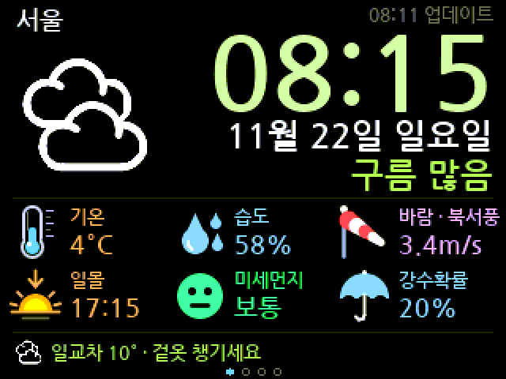
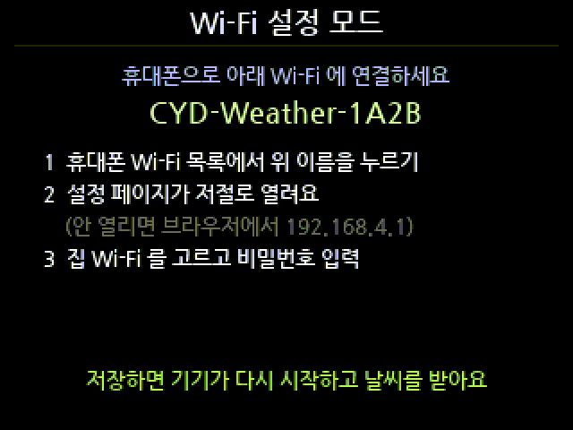
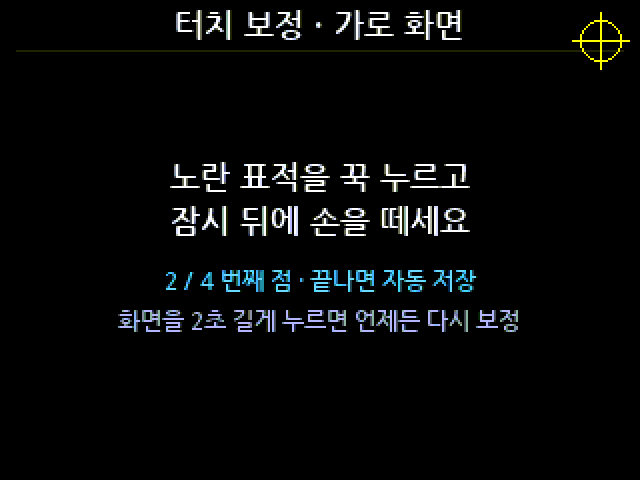

ESP32 · CYD 2.8″
큰 시계, 오늘 날씨, 미세먼지 등급을 한글로 보여 주는 침대 옆 시계입니다. 보드를 USB로 연결하고 버튼 하나만 누르면 됩니다. 그다음 업데이트는 휴대폰에서 Wi-Fi로 할 수 있어요.

이 브라우저는 USB 기기에 접근할 수 없어요. PC에서 Chrome이나 Edge로 이 페이지를 열어 주세요. (휴대폰·Safari·Firefox는 안 됩니다)
이 페이지를 https:// 주소로 열어야 설치할 수 있어요.
처음 켜면 아래 순서대로 한 번만 설정하면 됩니다.
‘기기에 설치’를 누르고 목록에서 USB-SERIAL CH340 (또는 CP210x) 포트를 고르세요. 처음 설치라면 ‘기기 지우기(Erase)’를 켜 두는 게 깔끔합니다.
포트가 안 보이면 CH340 드라이버를 설치하고 케이블을 다시 꽂아 보세요.
화면에 나오는 십자 표시를 차례로 콕 누르세요. 나중에 다시 하려면 화면을 길게 누르면 됩니다.
기기가 CYD-Weather-XXXX 라는 Wi-Fi를 띄웁니다. 휴대폰으로 연결하면 설정 페이지가 저절로 열려요. 안 열리면 브라우저에서 http://192.168.4.1 로 들어가세요.


같은 페이지에서 집 Wi-Fi를 고르고 비밀번호를 넣으면 기기가 다시 시작해 날씨를 받아옵니다. ESP32는 2.4GHz만 됩니다 (이름이 _5G로 끝나는 망은 안 돼요).
그다음부터는 같은 Wi-Fi의 휴대폰에서 기기 시스템 화면에 나오는 주소로 지역·화면·켜지는 시간을 바꿀 수 있어요.